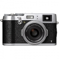
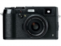
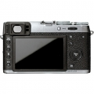
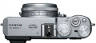

器材库 > 不可换镜头数码相机 > X100T
规格总览
发布日期
2014-09-10
厂家推荐价格
1,300.00 （美元）
防水
否
影像规格
影像传感器
X-Trans CMOS II
影像传感器尺寸
APS-C
总像素
1630万
静态图像格式
JPEG, RAW, RAW+JPEG
短片尺寸
1920×1080 60 p
镜头和对焦
镜头结构
8片/6组
非球面镜片
1片
焦距
23mm
等效35mm画幅焦距
35mm
最大光圈
F2
最近对焦距离
10cm
曝光控制
曝光模式
P（程序自动曝光）, A（光圈优先自动曝光）, S（快门速度优先自动曝光）, M（手动测光曝光）
快门速度
1秒~ 1 / 32000秒(p / a / s / m全模式)
曝光补偿
±2EV
ISO感光度
ISO200 – 6400，扩展至ISO 100、12800、25600，自动（可用的最大ISO设置范围为ISO 400 – ISO6400）
连拍
最高6张/秒
闪光灯
内置闪光灯
固定
取景规格
取景器尺寸
0.48英寸
取景器像素
236万
LCD类型
彩色TFT LCD
LCD尺寸
3.0英寸
LCD像素
104万
视野率
100%%
文件输入/输出
存储卡
SD/SDHC, SDXC, microSDHC
无线功能
Wi-Fi
电源
电池
np - 95
续航能力
330张
外观
颜色
银色, 黑色
尺寸
126 mm×74.4×52mm
重量
440（含卡与电池）g
wingszero2014-09-13 03:49
产品图 / 样片




评测 / 相关文章
- 详细内容 （存档）
- ［资讯］富士X100T官方样片欣赏 （存档）
- ［资讯］富士发布第3代X100T高档小型数码相机 （存档）
相关文章
- ［资讯］富士X100T官方样片欣赏 （存档）
- ［资讯］富士发布第3代X100T高档小型数码相机 （存档）
- ［资讯］富士X100T （存档）
- ［试用］一机两镜走天下，X100T扫街忙 （原站已下线）
- ［试用］色彩宜人的复古机 富士X100T海外评测 （原站已下线）
- ［试用］成熟之作 富士X100T评测 （原站已下线）